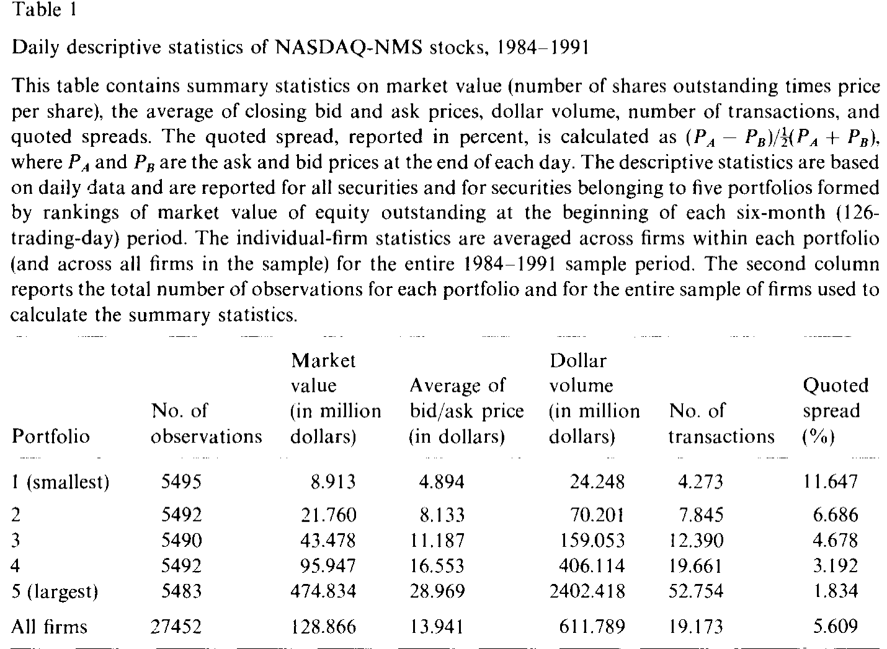
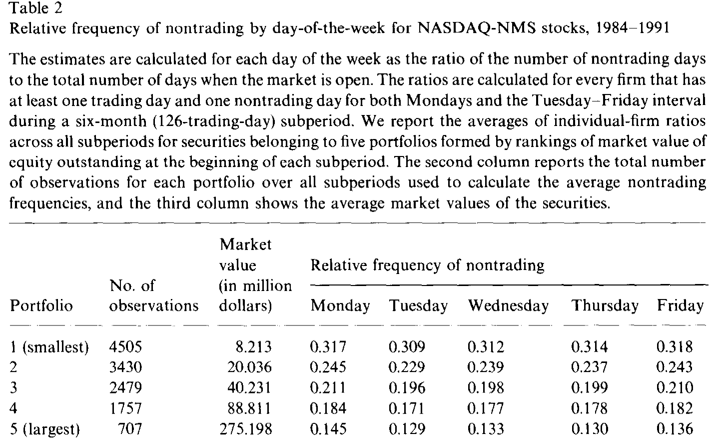
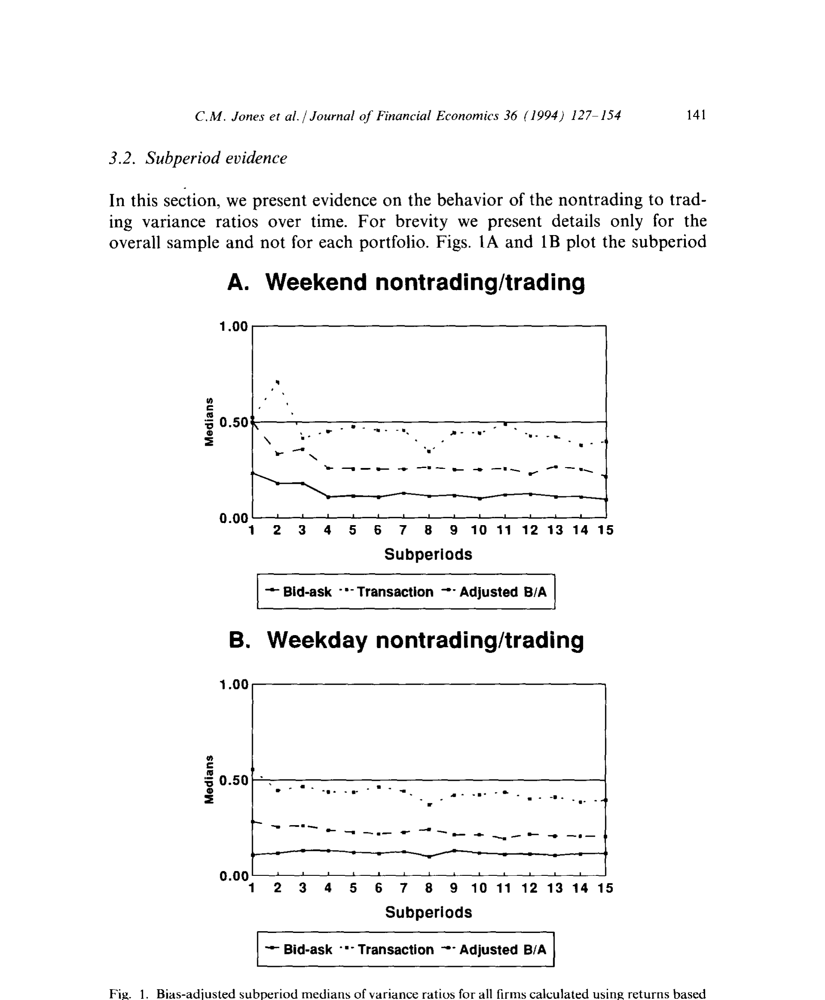
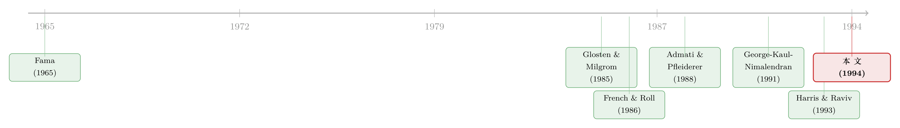

没人交易的那一天，股价照样在动
本文读的是 Jones, Kaul & Lipson (1994, Journal of Financial Economics)：作者用 NASDAQ-NMS 股票「开着门却没人交易」的那些日子做对照，发现即便完全没有成交，一只股票每天 20%–30% 的价格波动照样会发生，且这一比例随公司规模单调上升。再顺藤摸瓜地拆开买卖价差，他们给出一个更尖锐的判断：决定短期波动的，主要是 公开信息，而不是私有信息。
1 一个被反复问、却始终问不干净的问题
先抛一个看上去很朴素的问题：股价的波动，到底是「交易」造出来的，还是「信息」造出来的？
这听上去像是文字游戏，但它其实是市场微观结构 (market microstructure) 里最硬的一块骨头。一种直觉是：价格之所以动，是因为有人在买、有人在卖，是成交本身在推动价格——没有交易，价格自然就该「躺平」。另一种直觉恰好相反：价格之所以动，是因为有新信息到来，交易只是信息被消化时附带的产物——真正的主角是信息，交易不过是它的影子。
这两种直觉，谁对谁错，关乎一件大事：如果是交易在造波动，那么私有信息 (private information)、知情交易者 (informed trader)、做市商被「逆向选择」掏空的故事就是市场的核心剧本；如果是信息——尤其是公开信息 (public information)——在造波动，那么交易更像是一群人对着同一份新闻各自调仓的喧闹，私有信息其实没那么重要。
怎么把这两件事分开称重？
最经典的做法，是 French and Roll (1986) 想到的：比较交易所开门和关门时的波动。他们发现，按小时算，开市时段的收益方差是闭市时段的 13 到 100 倍。一个自然的解读是：交易（以及伴随交易而来的私有信息）贡献了绝大部分波动。这个发现影响极深——后来一整条文献都在围着「市场闭市」做文章（关于「公开信息只在闭市时降临」会怎样改写这套逻辑，可参见《把股票拆成一支球队：当『公开信息』只在闭市时降临》）。
但 Jones、Kaul 和 Lipson 在这篇 1994 年的论文里，盯住了 French-Roll 设计中的一道裂缝。
2 关键的一步：把「没人交易」重新定义
接着，一个自然的问题是：交易所关门的那段时间，真的只是「没有交易」吗？
并不是。周末闭市，不只是「停了交易」，它同时也停掉了很多别的东西：上市公司的办公室关了，分析师下班了，信息的生产与发布本身被改变了；与此同时，知情交易者也心知肚明「明天市场不开」，于是他们搜集信息、安排交易的节奏，全都会被这个可预测的日历提前调好。换句话说，French-Roll 的「闭市」是一个被污染的实验：你以为只关掉了「交易」这一个开关，其实顺手也拨动了「信息生产」和「交易者择时」这两个开关。
这篇论文真正关键的一步，是换了一个全新的「非交易」定义：
非交易日 (nontrading period) ＝ 交易所和企业都正常开门、但某只股票当天恰好没有任何成交的那一天。
这个定义的妙处在于两点。第一，这种非交易是事前不可预测的——交易者并不知道某只股票今天会不会有成交，所以他们的信息搜集与交易行为，不会被「能不能交易」这件事提前扭曲。第二，由于企业照常运转，生产和发布公开信息的活动丝毫未变。于是，交易日与非交易日之间唯一被干净地改变的，就只剩下「有没有成交」这一件事。
这就把 French-Roll 那个被污染的对照，变成了一个干净得多的对照。如果在「开着门、信息照常流动、只是没人下单」的日子里，股价依然剧烈波动，那只能说明：波动不需要交易也能发生——价格在没有成交的情况下，照样把信息吸收了进去。
3 怎么量：非交易/交易方差比
那么，怎样把这件事量化成一个数字？
作者的做法，是计算 非交易日与交易日的收益方差之比。沿用 Schwert (1990) 的两步法：先估一条均值方程，把可预测的预期收益剥掉，再用残差的平方去估方差。
第一步，对每只股票、每个子期，估计带星期几虚拟变量的均值方程（用来吸收「周一效应」这类可预测的预期收益差异）：
$$R_{it} = \sum_{k=1}^{5} \alpha_{ik} D_{kt} + \epsilon_{it}$$
这里 \(R_{it}\) 是股票 \(i\) 在第 \(t\) 天的收益，\(D_{kt}\) 是五个星期几虚拟变量。注意：均值方程里不区分交易日与非交易日，因为非交易是事前不可预测的，没法拿来条件化预期收益。
第二步，把上一步的残差平方 \(\hat{\epsilon}_{it}^2\) 当作被解释变量，按「交易/非交易 × 周一/周内」分组回归，得到各组的方差估计：
$$\hat{\epsilon}_{it}^2 = \sigma^2_{iNTM} D_{NTMt} + \sigma^2_{iTM} D_{TMt} + \sigma^2_{iNTTF} D_{NTTFt} + \sigma^2_{iTTF} D_{TTFt} + \sigma^2_{i1DH} D_{1DHt} + \sigma^2_{i3DH} D_{3DHt}$$
其中 \(NTM/TM\) 是非交易/交易的周一（周一前面隔着两天的周末歇业，单独处理），\(NTTF/TTF\) 是非交易/交易的周二至周五，\(1DH/3DH\) 则是一天和三天的节假日。
最后，把方差两两相除，得到两个核心的方差比——周末（周一）的 \(V_1\) 和周内的 \(V_2\)：
这个比值的解读非常直接：\(V_1\)（或 \(V_2\)）等于 0，意味着没有交易就没有波动——交易是波动的全部来源；\(V_1\) 等于 1，意味着有没有交易对波动毫无影响——价格自顾自地动。真实世界落在中间的哪个位置，就是这篇论文要回答的事。
4 但价格是「脏」的：两道必须先擦掉的偏差
然而，事情没这么简单。真正关键的难点，在于个股的高频价格本身是带噪声的，而这些噪声会系统性地污染方差比。这也是为什么很多人直觉上觉得「算个方差比有什么难的」，却始终做不干净的原因。作者沿用 Jones and Kaul (1993) 的思路，专门处理了两道偏差。
第一道：买卖价差的「弹跳」(bid/ask bounce)。 成交价时而打在买价、时而打在卖价上，来回弹跳，凭空制造出一堆虚假波动；而且这种虚假波动的大小，直接与价差的平方成正比。这个问题在本文样本里尤其致命：NASDAQ-NMS 的报价价差 (quoted spread) 平均高达 5.61%，最小一组甚至到 11.65%，最大一组也有 1.83%（见表 1）。作者在附录里证明，成交价里的测量误差会把方差比 \(V_1\)、\(V_2\) 系统性地拉向 0.50——这恰恰会把真实的横截面、时间序列规律全部抹平。

Table I
绕开弹跳的办法，是改用收盘买卖报价的均值来算收益——CRSP 对 NASDAQ-NMS 在交易日和非交易日都报这个「内部」报价，这正是作者选 NMS 样本的原因。
第二道：报价的「黏性」(stickiness in quotes)。 可换成报价收益又冒出新麻烦。Geraghty (1992) 发现，超过 50% 的 NASDAQ 股票，其收盘内部报价一天到下一天纹丝不动，哪怕当天明明有过交易；而且这个「黏住不动」的比例，最小一组的股票大约是最大一组的两倍。报价不动，就会给报价收益注入虚假的正自相关，反过来又把方差比压偏。
作者的修正办法，是把均值方程升级，额外条件化在五期滞后的自身收益、以及当期与五期滞后的市场组合收益上：
$$R_{it} = \sum_{k=1}^{5} \alpha_{ik} D_{kt} + \sum_{j=1}^{5} \phi_{ij} R_{i,t-j} + \sum_{j=0}^{5} \gamma_{ij} R_{m,t-j} + \epsilon_{it}$$
其中 \(R_{m}\) 是 NYSE/AMEX 的市值加权指数收益，五期滞后对应「一周」的长度。把这些黏性带来的滞后调整先吸收掉，再去算方差比，才算两道偏差都擦干净。
5 反转：没有交易，价格照样动
擦干净之后，结果来了，而且和 French-Roll 那个「13 到 100 倍」的世界相当不一样。
校正了弹跳与黏性之后，非交易/交易方差比落在 0.20 到 0.30 之间。翻译成人话：在交易所和企业都开着门的日子里，一只股票每天的价格波动，有 20% 到 30% 是在完全没有成交的情况下发生的。价格并不需要交易来推动——它在无人下单的沉默里，照样把信息消化进去了。
更有意思的是横截面规律：方差比随公司规模单调上升。大公司「无需交易」的那部分波动占比，明显高于小公司——周末方差比 \(V_1\) 的中位数，最大一组公司比最小一组高出约 50%。如表 2 所示，与之呼应的是非交易本身的频率：小公司频繁地无人问津（最小组周一非交易频率约 0.317），大公司则少得多（最大组约 0.145），相差一倍有余。

Table 2
把这两件事放在一起看，图景就清楚了：大公司即便偶尔一天没人交易，价格也照样动得厉害；小公司则更接近「不交易就不太动」。这正是图 1 想讲的故事——经偏差校正后，各子期方差比的中位数稳定地落在 0.2–0.3 的带子里，并随规模抬升。

Figure 1: Bias-adjusted subperiod medians of variance ratios for all firms calculated using returns based
一个常见的误读是把方差比直接当成「公开信息的占比」。它能这样读，前提是你假设公开信息无需交易即可入价、而私有信息必须靠交易才能入价。本文聪明的地方，恰恰在于它不满足于这个假设，而是要进一步把「公开 vs 私有」分开——这才是下半篇的重头戏。
6 真正的核心：公开信息，还是私有信息？
到这里，论文其实可以收尾了：它已经漂亮地说明「波动不全靠交易」。但作者把刀往更深处递了一层，去追问那个最要命的问题——剩下的波动，是公开信息造的，还是私有信息造的？
他们摆出两个极端化的基准假说。
- 假说一：公开信息以恒定速率到达、无需交易即可入价；私有信息的到达是随机的、且必须靠交易才能反映到价格里。这正是 French and Roll (1986)、Hasbrouck (1991) 等隐含采用的图景。在这个假设下，非交易/交易方差比就是公开信息相对重要性的度量。
- 假说二：私有信息只占信息总流量极小（甚至可忽略）的一部分，而公开信息本身也会引发交易。毕竟每天都有大量公司与宏观公告，而公告往往伴随成交激增；Harris and Raviv (1993) 甚至证明，即便完全没有私有信息（因而没有任何信息不对称），仅凭意见分歧也足以产生交易。在这个假设下，方差比度量的是公开信息在非交易日与交易日之间的相对流量。
怎么在两者间裁决？作者动用了微观结构里那把最锋利的尺子——买卖价差里的逆向选择成分 (adverse-selection component)。逻辑链条是这样的：
首先，用 George, Kaul, and Nimalendran (1991) 的方法，估出价差中由信息不对称（逆向选择）贡献的那一块。结果，逆向选择成分只占报价价差的 12%–15%——也就是说，私有信息在这个市场里本就分量很轻（关于逆向选择如何抬高「要求回报」、又为何常被高估，可参见《价差是真的，成本却是假的——逆向选择究竟从哪里抬高了「要求回报」》）。
接着，是更要命的一步检验：比较交易日与非交易日的买卖价差。这里藏着一个 Easley and O'Hara (1992) 式的判别逻辑——
如果私有信息主导波动，那么没有成交，往往意味着知情交易者今天没来；做市商面对的逆向选择风险下降，非交易日的价差应当窄于交易日。反过来，如果公开信息才是主角，那么逆向选择成分本就既小又不随交易状态变化，两类日子的价差应当既小又相等。
作者发现：交易日与非交易日的平均买卖价差之差，在经济意义上微不足道，且不论公司的横截面特征如何，这个结论都成立。价差几乎不随「有没有交易」而变——这把矛头牢牢指向了公开信息。
最后，作者回头用新定义重审了「闭市」实验，给出一个干净的二择一：要么 (a) 公开信息是波动的主要决定因素；要么 (b) 周末私有信息搜集的减少，恰好等于周末公开信息流量的减少。而 (b) 所要求的那种「公私信息流量对称下降」实在太巧、太不可信。于是反转坐实：私有信息只是信息总流量里很小的一块，决定短期波动的主力，是公开信息。
7 文献脉络
把这条线索摊开看，它其实是市场微观结构与「信息—波动」关系研究的一次重要转向。
最早，人们只是描述股票收益在交易与非交易时段的统计差异——Fama (1965)、Granger and Morgenstern (1970)、Oldfield and Rogalski (1980) 都属于这一拨。真正点燃这条文献的，是 French and Roll (1986)：他们用「开市 vs 闭市」的方差对比，把「交易（私有信息）造波动」的叙事推上了主舞台。

与此同时，理论一侧在搭建知情交易的引擎：Kyle (1985) 与 Glosten and Milgrom (1985) 奠定了私有信息、知情交易者与买卖价差的经典框架；Admati and Pfleiderer (1988) 则用策略性交易解释了日内的「量—波动」聚集。这些模型让「私有信息驱动一切」显得理所当然。
但天平开始倾斜。George, Kaul, and Nimalendran (1991) 给出了把价差拆成逆向选择成分的新方法——这恰好成了本文的关键工具；Harris and Raviv (1993)、以及 Foster and Viswanathan (1993b)、Kim and Verrecchia (1991) 等则从理论上论证：公开信息（乃至纯粹的意见分歧）本身就能引发交易，知情交易并非交易的唯一来源。本文 (1994) 正站在这个转折点上：它用一个事前不可预测的「非交易」定义做出干净对照，把 French-Roll 的结论翻修了一遍，并把投票最终投给了公开信息。
8 评论与延伸（Q&A + 研究方向）
(a) 几个可能的疑问
Q：本文的「非交易」和 French-Roll 的「闭市」到底差在哪，差别有那么重要吗？
差在「可预测性」与「信息生产是否照常」。闭市是日历上写死的、可预测的，企业也歇业，所以它同时改变了交易、信息生产、交易者择时三件事；本文的非交易是事前不可预测的、企业照常开门，因此唯一被干净改变的只有「有没有成交」。正是这道区别，让方差比从一个被污染的量，变成了一个可解释的对照。
Q：20%–30% 的「无交易波动」会不会只是没擦干净的测量误差？
这正是作者花最大力气防的。附录证明成交价噪声会把方差比拉向 0.50，所以他们改用买卖报价均值剔除弹跳、再条件化滞后收益剔除报价黏性。校正方向恰好是把虚高的比值往下压，最终仍稳定落在 0.2–0.3，而非贴着 0.50。这让「无交易波动」更像真信号而非残余噪声。
Q：为什么方差比随公司规模上升，而不是下降？
大公司公开信息更密集、更连续，价格在非交易日也能持续吸收新闻；小公司信息稀疏，价格更依赖偶发的成交来更新。换个角度，大公司非交易频率低，一旦遇上没人交易的日子，价格照样动，故占比更高。这与「公开信息主导」的解释一致。
Q：逆向选择只占价差 12%–15%，这能直接等同于「私有信息不重要」吗？
不能划等号，但它是强有力的旁证。作者并不只靠这一个数，而是叠加了「交易日与非交易日价差几无差别」这一条更直接的证据——若私有信息主导，价差本应随交易状态显著变化。两条证据合在一起，才把结论推向公开信息。
Q：NASDAQ-NMS 的结论，能外推到 NYSE 这种大盘股市场吗？
要小心。本文样本里大公司「代表性不足」：平均价差 5.61% 远高于同期 NYSE/AMEX 的 2.82%，那些价差低于 1% 的真正大盘股根本没进样本。所以「公开信息主导」在更大、更流动的股票上是否同样成立，本文只能间接暗示，不能直接断言。
Q：意见分歧也能在没有任何私有信息时制造交易和波动，这会不会反过来动摇本文的对照？
不会，反而是本文论证的一环。Harris-Raviv 式的「分歧驱动交易」恰好说明：交易未必来自私有信息，公开信息也能引发成交。这支持了「假说二」，即方差比不应被简单读成私有信息占比——而这正是作者强调要用价差证据二次确认的原因。
(b) 几个可能的研究问题与提案
1. 把这套「非交易对照」搬到公司债市场。 【经济故事】公司债天然「稀交易」，很多债券一天甚至数日无成交，且公开信息（评级行动、财报、宏观）与私有信息（机构持仓、承销关系）边界与股票很不一样。用本文的「开着门却没成交」对照，能直接检验：信用利差的短期波动，多少发生在零成交之时？【可行性】高。TRACE 提供逐笔成交与报价，可识别真正的非交易日；难点是债券报价更稀、更黏，需要比本文更狠的黏性校正。
2. 外资持有人是「私有信息」还是「公开信息」的载体？ 【经济故事】关于外资是知情交易者还是噪声推手，争议已久。可借本文思路，比较外资可投资度高/低的股票，其非交易/交易方差比与逆向选择成分的差异——若外资带来私有信息，开放后逆向选择成分应上升、非交易日价差应相对收窄。【可行性】中。需要个股级别的外资可投资度与高频报价数据（如新兴市场 + CRSP 式报价），识别上可用指数纳入等准自然实验。
3. 用现代高频数据重估「无交易波动」的占比。 【经济故事】1994 年只有日度收盘报价；今天有逐笔与纳秒级数据，可以把「无交易区间」精细到分钟乃至秒，检验本文 0.2–0.3 是否随抽样频率系统性变化。【可行性】高。数据现成（TAQ），但要小心微观结构噪声在超高频下被放大——这本身又回到本文附录那道「噪声把方差比拉向 0.50」的老问题。
4. 把「公开 vs 私有」做成连续谱而非二择一。 【经济故事】本文承认两个假说是极端化基准，真实世界在中间。能否构造一个结构模型，用价差成分 + 方差比 + 成交量三组矩，联合识别公开/私有信息流量的相对强度？【可行性】中到低。理论上可借 Glosten-Milgrom/Kyle 框架扩展，但联合识别对数据要求高，且对模型设定敏感。
参考文献
Admati, A. R., & Pfleiderer, P. (1988). A theory of intraday trading patterns: Volume and price variability. Review of Financial Studies 1(1), 3–40.
Easley, D., & O'Hara, M. (1992). Time and the process of security price adjustment. Journal of Finance 47(2), 577–605.
Fama, E. F. (1965). The behavior of stock market prices. Journal of Business 38(1), 34–105.
French, K. R., & Roll, R. (1986). Stock return variances: The arrival of information and the reaction of traders. Journal of Financial Economics 17(1), 5–26.
George, T. J., Kaul, G., & Nimalendran, M. (1991). Estimation of the bid-ask spread and its components: A new approach. Review of Financial Studies 4(4), 623–656.
Geraghty, K. M. (1992). Stickiness in NASDAQ dealer quotes. Working paper, University of Chicago.
Glosten, L. R., & Milgrom, P. R. (1985). Bid, ask and transaction prices in a specialist market with heterogeneously informed traders. Journal of Financial Economics 14(1), 71–100.
Harris, M., & Raviv, A. (1993). Differences of opinion make a horse race. Review of Financial Studies 6(3), 473–506.
Hasbrouck, J. (1991). The summary informativeness of stock trades: An econometric analysis. Review of Financial Studies 4(3), 571–595.
Jones, C. M., & Kaul, G. (1993). On the use of variance ratios. Working paper, University of Michigan.
Jones, C. M., Kaul, G., & Lipson, M. L. (1994). Information, trading, and volatility. Journal of Financial Economics 36(1), 127–154.
Kim, O., & Verrecchia, R. E. (1991). Market reaction to anticipated announcements. Journal of Financial Economics 30(2), 273–309.
Kyle, A. S. (1985). Continuous auctions and insider trading. Econometrica 53(6), 1315–1335.
Oldfield, G. S., & Rogalski, R. J. (1980). A theory of common stock returns over trading and nontrading periods. Journal of Finance 35(3), 729–751.
Schwert, G. W. (1990). Stock volatility and the crash of '87. Review of Financial Studies 3(1), 77–102.
评述者的判断。 这篇论文的贡献不在数据，而在实验设计：用一个事前不可预测、企业照常运转的「非交易」定义，把 French-Roll 那个被三重污染的对照清洗成一个近乎单变量的对照——这是微观结构里少见的、靠「重新定义自变量」就把老问题做新的范例。它最漂亮的一招，是没有停在「波动不全靠交易」这个还算温和的结论上，而是借价差里的逆向选择成分，再补一刀，把矛头明确指向公开信息。
但有两处识别上的担忧值得记下。其一是样本的代表性：NASDAQ-NMS 把真正的大盘股挡在了门外（平均价差 5.61% vs NYSE 的 2.82%），而结论又恰恰说「大公司无交易波动占比更高」——最能证伪或证实这一点的那批超大盘股，偏偏不在样本里。其二是方差比解读的脆弱性：作者自己也承认，把方差比读成「公开信息占比」依赖一组极端化假设，真实世界落在中间；最终结论其实是靠「价差证据」托住的，而价差成分的估计 (12%–15%) 又依赖 George-Kaul-Nimalendran 那套模型设定。
后续我最想看到的，是把它搬到公司债与外资持有人这两个场景里重做一遍：前者天然稀交易、公开/私有信息边界更清晰，后者则能把「外资到底带不带私有信息」这桩公案，用同一把尺子量个明白。